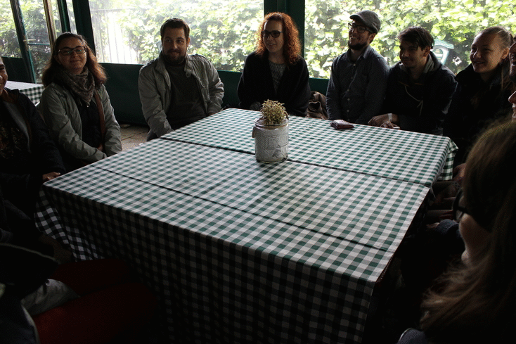
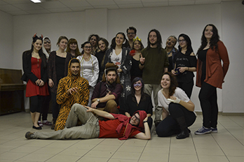
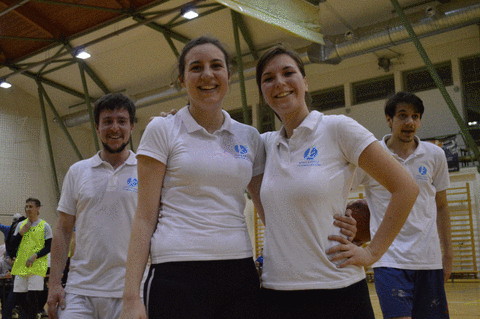
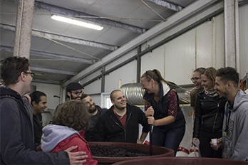
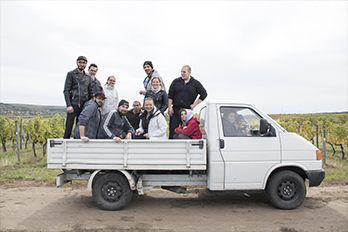
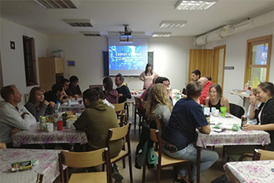
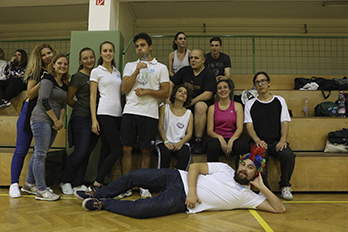
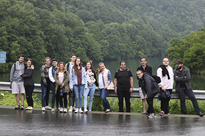
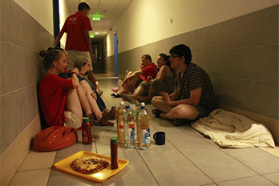

A Kepes Életérzés
Szakkollégistaként az egyetem legkülönbözőbb szakjairól jövő emberekkel fogod tölteni az egyetemi életed legjelentősebb részét.
Megtapasztalod az igazi egyetemi létet. Egy előadás után összeültök sörözni, és kibeszélni a hallottakat különböző szemszögekből.
Néha a folyosónk egycsapásra koncertteremmé válik, máskor a buli előtti felkészülés, vagy a buli utánni chill helyszínévé.
A programjaink közt találhatóak: előadások a legkülönbözőbb témákban, workshopok, tréningek, kirándulások, palacsinta est, nyársalás, folyosómozi, bulik, nyári tábor, kiállítás-látogatások, és még sok egyéb.








